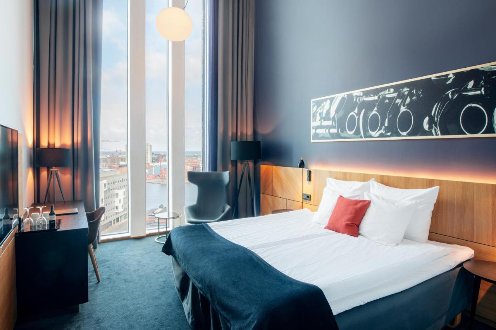
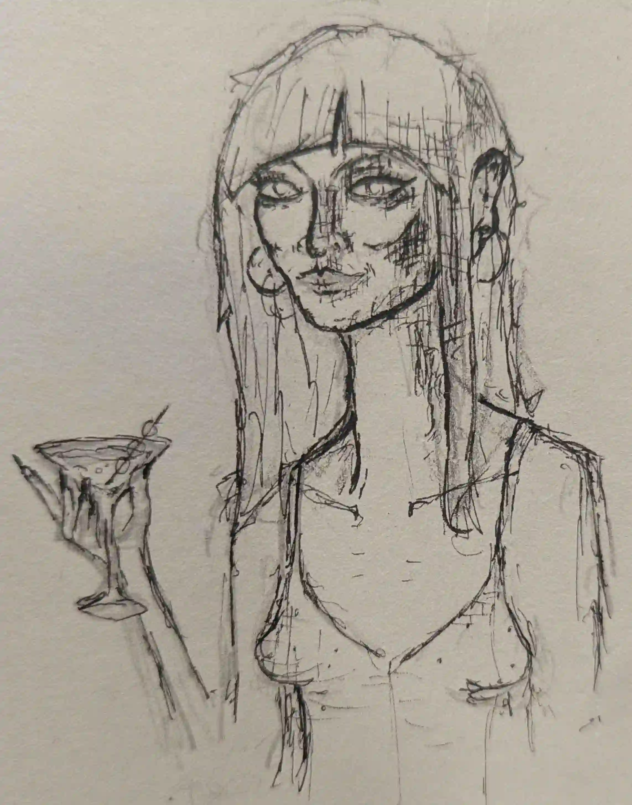

Polisens blåljus flammar över det disiga landskapet, reportrar trängs vid avspärrningarna, mobilkameror uppe, röster viskar: En kropp har hittats, flytande i vattnet utanför Malmö.
Mia vaknar med ett ryck i sin säng. Pulsen rusar. Hon vet inte exakt vad det är hon sett, bara att det var mörkt, kallt, och att det var en kropp i vattnet.
Hon blundar, försöker tvinga sig tillbaka in i sömnen, i bakhuvudet snurrar tanken på schemat inför
imorgon och att hon har mycket att färdigställa. Men drömmen klamrar sig fast vid henne och fyller
hotellrummet med en känsla av obehag.
Tillslut blir hon tvungen att ge upp och kliver ljudlöst ut ur rummet genom den ekande,
mattklädda
korridoren ned till hotellets bar.
Belysningen är dämpad, stolarna tomma, men i ett hörn sitter en ensam figur - en äldre kvinna i paljettkofta och vinrött läppstift som blött ut i mungiporna. Hennes hår är grått och ostyrigt, som om hon inte sovit på dagar. Mia går fram till bardisken, men bartendern är borta. Hon ser sig om, funderar på att gå tillbaka - men kvinnan talar innan hon hinner resa sig.
"Det här hotellet är som ett isberg. Man ser bara toppen. Resten döljer sig bakom stängda dörrar." säger hon och drar på munnen.
Tystnaden som följer är tung. Mia, i nuläget o-förberedd för mänsklig kontakt stirrar tomt på kvinnan.
“Du ser ut som en som sett ett spöke", konstaterar kvinnan.
Denna gången väntar hon inte på något svar, från glimten i hennes ögon kan Mia anta att hon inte har något emot att vara den som drar tyngsta lasset i en konversation.
“Bartendern gick ut för en cigarett nyligen, det blir ofta mer än en när det bara är jag här. Kom, sitt ner, medans du väntar kan du berätta varför din blick går rakt igenom mig.”
Mia tänker ett tag, ”Jag bara drömde något underligt” är det bästa hon får fram.
Kvinnans leende breddar sig, ”jag förstår, tur för dig att du hittade mig här, tyda drömmar är något jag gärna gör, bjud mig på en drink när Andrea är tillbaka bakom baren så har du resten av min natt till förfogan.”
Sakta går Mia igenom detaljerna av drömmen, kroppen, vattnet, känslan av obehag, som om något farligt var på väg.
”Jag tror du bör lyssna på det obehaget, drömmar har ofta symboliska betydelser men något om hur du beskriver det ger en mer saklig känsla, har du någonsin drömt något som senare blivit verklighet? Brukar du kunna känna fara innan den visar sig?”
Mia sitter där lite lamslagen, det blev helt plötsligt lite för mycket. Det kändes skönt att välla ur sig sin oro, men svaret om att det också skulle betyda något och bli verklighet gav inte precis en känsla av lugn. När hon vänder sig om står en kvinna bakom baren, hon nickar till sin samtalspartner och rör sig mot baren. Genom den tjocka lukten av marlboro röda beställer hon den äldre kvinnan en till av vad hon dricker, ursäktar sig och drar sig tillbaka mot sitt rum.